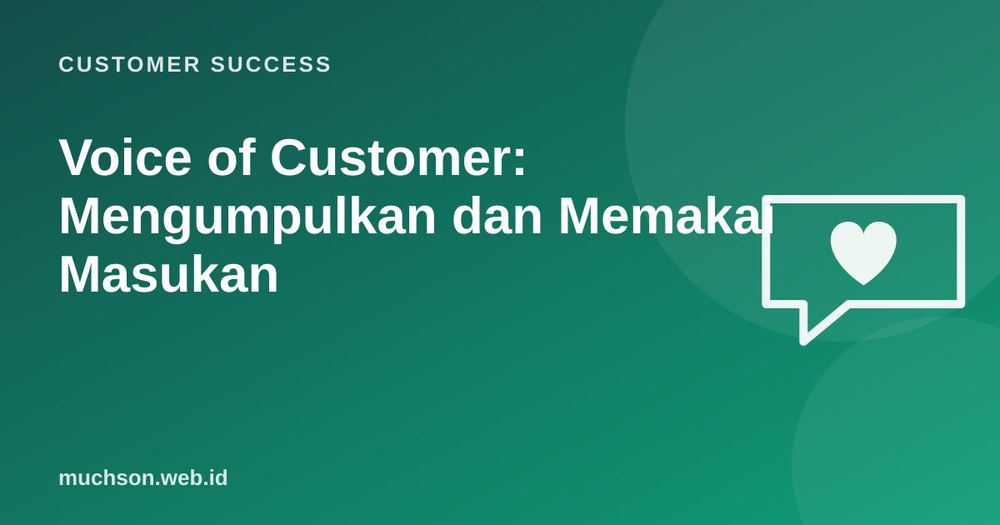

Beranda › Artikel › Customer Success
Customer SuccessVoice of Customer: Mengumpulkan dan Memakai Masukan
Masukan pelanggan tersebar di mana-mana: tiket support, chat WhatsApp, komentar survei, catatan rapat CSM, ulasan di toko aplikasi. Tanpa sistem, masukan itu hilang, atau hanya suara paling keras yang didengar. Program voice of customer (VoC) mengumpulkan semuanya menjadi bukti yang bisa dipakai untuk keputusan.

Sumber masukan
| Sumber | Kelebihan | Perhatikan |
|---|---|---|
| Tiket dan chat support | Volume besar, masalah nyata | Cenderung negatif |
| Komentar survei (NPS, CSAT) | Terukur dan berkala | Tingkat respons |
| Catatan CSM dan QBR | Konteks bisnis yang dalam | Bias akun besar |
| Wawancara pengguna | Alasan "mengapa" | Sedikit orang |
| Ulasan publik | Suara yang jujur | Bisa ekstrem |
| Data pemakaian | Perilaku nyata | Tidak menjelaskan alasan |
Dari masukan mentah ke wawasan
Catat masalah yang dialami, bukan hanya solusi yang diminta. "Butuh ekspor Excel" bisa jadi masalah sebenarnya adalah "laporan untuk atasan butuh 2 jam disusun manual".
Memberi bobot dengan adil
Hindari "suara paling keras menang". Satu pelanggan besar yang sering mengeluh tidak selalu mewakili kebutuhan banyak pelanggan lain. Data membantu diskusi tetap adil.
Laporan bulanan untuk tim produk
VOICE OF CUSTOMER, Oktober 2026
Top 3 tema
1. Laporan harian sulit diekspor (18 akun, Rp12 juta MRR, 4 akun berisiko)
Kutipan: "Tiap Senin saya butuh 2 jam menyalin data ke Excel untuk direksi."
2. Notifikasi stok terlambat (11 akun)
3. Onboarding karyawan baru di cabang memakan waktu (9 akun)
Tren: tema 1 naik dari 9 akun bulan lalu.
Permintaan tindakan: diskusi solusi tema 1 di sprint planning berikutnya.Menutup lingkaran
Kabari pelanggan ketika masukan mereka ditindaklanjuti, walau jawabannya "belum bisa sekarang". Pesan sederhana seperti "Fitur ekspor yang Bapak minta sudah tersedia mulai hari ini" membuat pelanggan merasa didengar dan mendorong mereka memberi masukan lagi.
Tanya jawab
Siapa pemilik program VoC?
Bolehkah memakai AI untuk mengelompokkan masukan?
Bagaimana bila tim produk tidak menindaklanjuti?
Sumber dan bacaan lanjut
- Griffin dan Hauser (1993): The Voice of the Customer, Marketing Science
- Wawancara pengguna (artikel terkait)
- Net Promoter Score (artikel terkait)
- QBR (artikel terkait)